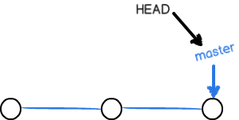
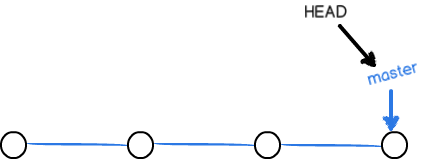
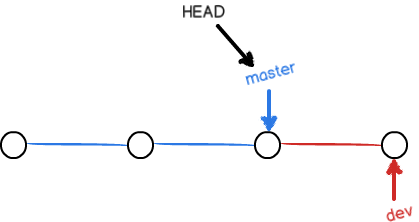

在 版本回退 里，你已经知道，每次提交，Git 都把它们串成一条时间线，这条时间线就是一个分支。截止到目前，只有一条时间线，在 Git 里，这个分支叫主分支，即 master 分支。HEAD 严格来说不是指向提交，而是指向 master，master 才是指向提交的，所以，HEAD 指向的就是当前分支。
一开始的时候，master 分支是一条线，Git 用 master 指向最新的提交，再用 HEAD 指向 master，就能确定当前分支，以及当前分支的提交点：

每次提交，master 分支都会向前移一步，这样，随着你不断提交，master 分支的线也越来越长。
当我们创建新的分支，例如 dev 时，Git 新建了一个指针叫 dev，指向 master 相同的提交，再把 HEAD 指向 dev，就表示当前分支在 dev 上：

你看，Git 创建一个分支很快，因为除了增加一个 dev 指针，改改 HEAD 的指向，工作区的文件都没有任何变化！
不过，从现在开始，对工作区的修改和提交就是针对 dev 分支了，比如新提交一次后，dev 指针往前移动一步，而 master 指针不变：

假如我们在 dev 上的工作完成了，就可以把 dev 合并到 master 上。Git 怎么合并呢？最简单的方法，就是直接把 master 指向 dev 的当前提交，就完成了合并：

所以 Git 合并分支也很快！就改改指针，工作区内容也不变！
合并完分支后，甚至可以删除 dev 分支。删除 dev 分支就是把 dev 指针给删掉，删掉后，我们就剩下一条 master 分支：

真是太神奇了，你看得出来有些提交是通过分支完成的吗？
下面开始实战。
首先，我们创建 dev 分支，然后切换到 dev 分支：
$ git checkout -b dev |
git checkout命令加上-b参数表示创建并切换，相当于以下两条命令：
$ git branch dev |
然后，用git branch命令查看当前分支：
$ git branch |
git branch命令会列出所有分支，当前分支前面会标一个*号。
然后，我们就可以在 dev 分支上正常提交，比如对 readme.txt 做个修改，加上一行：
Creating a new branch is quick. |
然后提交：
$ git add readme.txt |
现在，dev 分支的工作完成，我们就可以切换回 master 分支：
$ git checkout master |
切换回 master 分支后，再查看一下 readme.txt 文件，刚才添加的内容不见了！因为那个提交是在 dev 分支上，而 master 分支此刻的提交点并没有变：

现在，我们把 dev 分支的工作成果合并到 master 分支上：
$ git merge dev |
git merge命令用于合并指定分支到当前分支。合并后，再查看 readme.txt 的内容，就可以看到，和 dev 分支的最新提交完全一样的。
注意到上面的 Fast-forward 信息，Git 告诉我们，这次合并是「快进模式」，也就是直接把 master 指向 dev 的当前提交，所以合并速度非常快。
当然，也不是每次合并都能 Fast-forward，我们后面会讲其他方式的合并。
合并完成后，就可以放心地删除 dev 分支了：
$ git branch -d dev |
删除后，查看 branch，就只剩下 master 分支了：
$ git branch |
因为创建、合并和删除分支非常快，所以 Git 鼓励你使用分支完成某个任务，合并后再删掉分支，这和直接在 master 分支上工作效果是一样的，但过程更安全。
switch
我们注意到切换分支使用git checkout <branch>，而前面讲过的撤销修改则是git checkout -- <file>，同一个命令有两种作用，确实有点令人迷惑。
实际上，切换分支这个动作，用 switch 更科学。因此，最新版本的 Git 提供了新的git switch命令来切换分支。
创建并切换到新的 dev 分支，可以使用：
$ git switch -c dev |
直接切换到已有的 master 分支，可以使用：
$ git switch master |
使用新的git switch命令，比git checkout要更容易理解。
小结
Git 鼓励大量使用分支。
- 查看分支：
git branch - 创建分支：
git branch <name> - 切换分支：
git checkout <name>或者git switch <name> - 创建 + 切换分支：
git checkout -b <name>或者git switch -c <name> - 合并某分支到当前分支：
git merge <name> - 删除分支：
git branch -d <name>